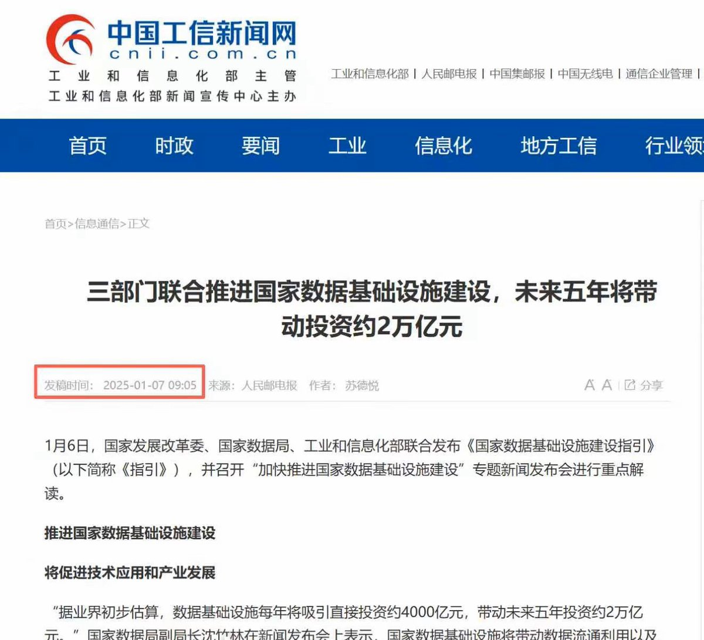

奶昔🥤
@realNyarime
@CuiMao 这玩意也只可能是中国铁塔在做，现在5g都还没完全满血供应，反而6g出来了，很讽刺啊

CuiMao
@CuiMao
其实这个就是十五五早就规划过的6张网， 水网 ，电网 ，算力网 。5G‑A万兆光网。 城市地下管网，
和物流网。目前彭博社把他炒重新炒出来。只是说明确定国营要动了罢了。没什么新鲜事。 https://t.co/s8JAfaRUxL https://t.co/j1Abf8I9yi